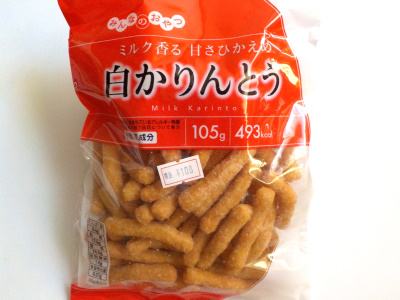

夏目製菓のミルク香る甘さひかえめ白かりんとう。
2022/10/07

シンプルな砂糖味のカリントウです。味は違うんですが、パンの耳を揚げて砂糖をまぶしたお菓子を思い出しました。
甘すぎない砂糖味のお菓子は普通に美味しいです。
もっと甘くしたり塩を多くしたり、違う具材入れたりしますが、地味なものもいいですね。
愛知県豊橋市東森岡1丁目5番地の10
2022/10/07

シンプルな砂糖味のカリントウです。味は違うんですが、パンの耳を揚げて砂糖をまぶしたお菓子を思い出しました。
甘すぎない砂糖味のお菓子は普通に美味しいです。
もっと甘くしたり塩を多くしたり、違う具材入れたりしますが、地味なものもいいですね。